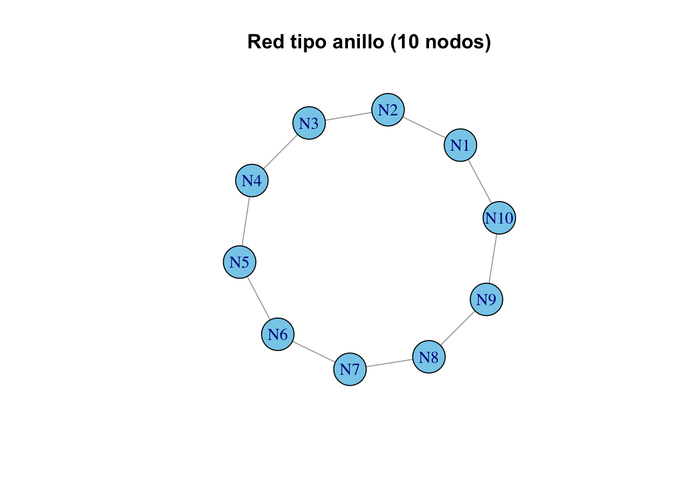
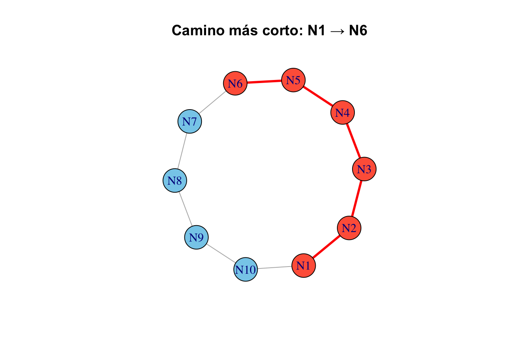
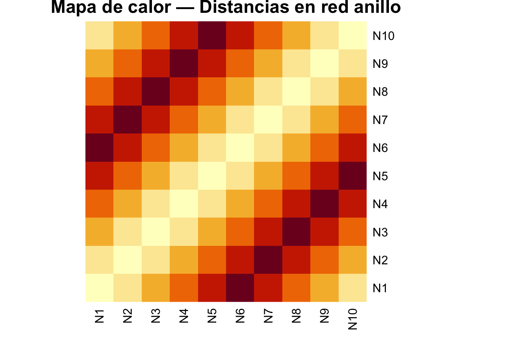
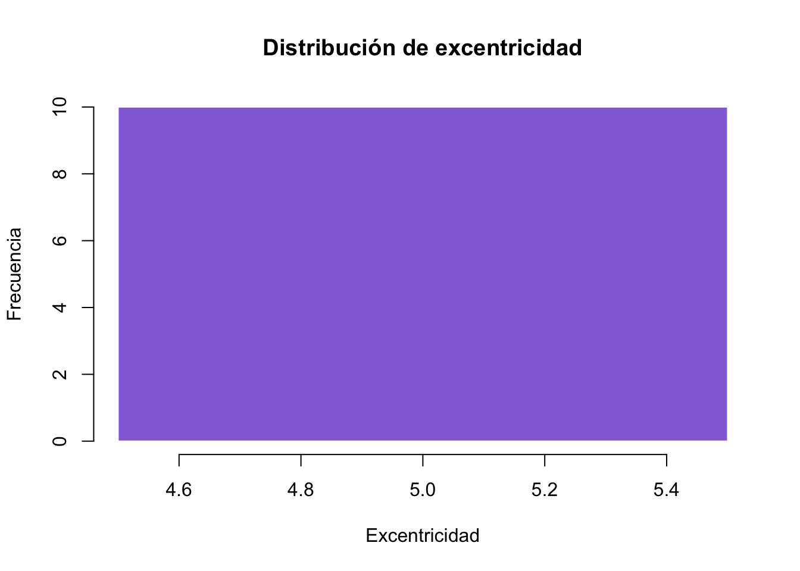
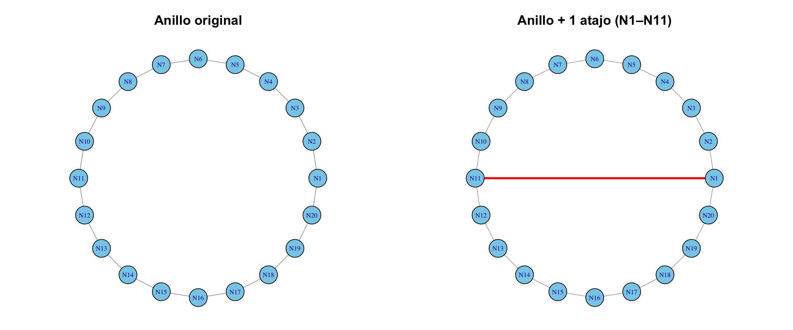
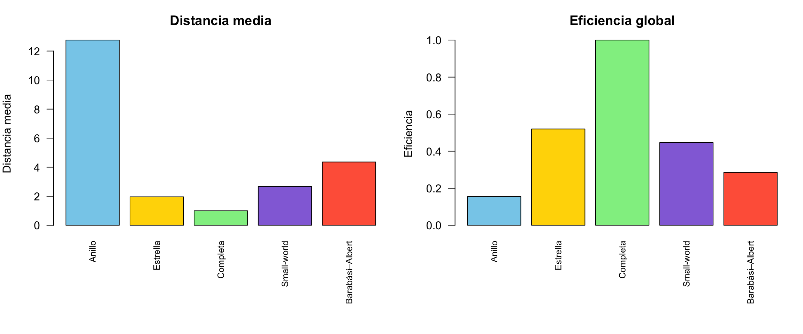
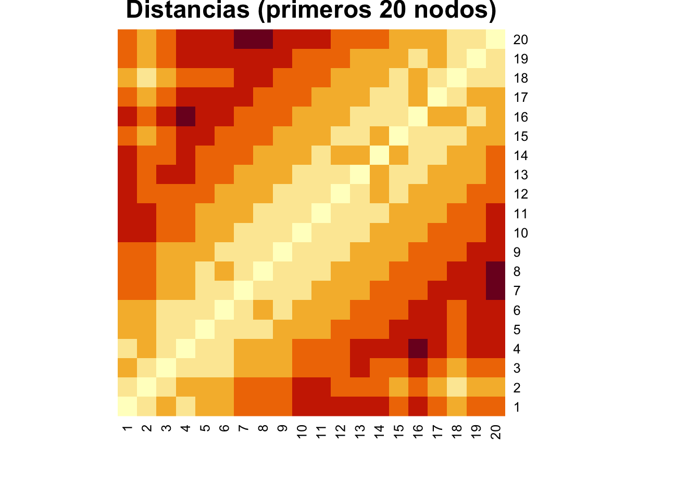
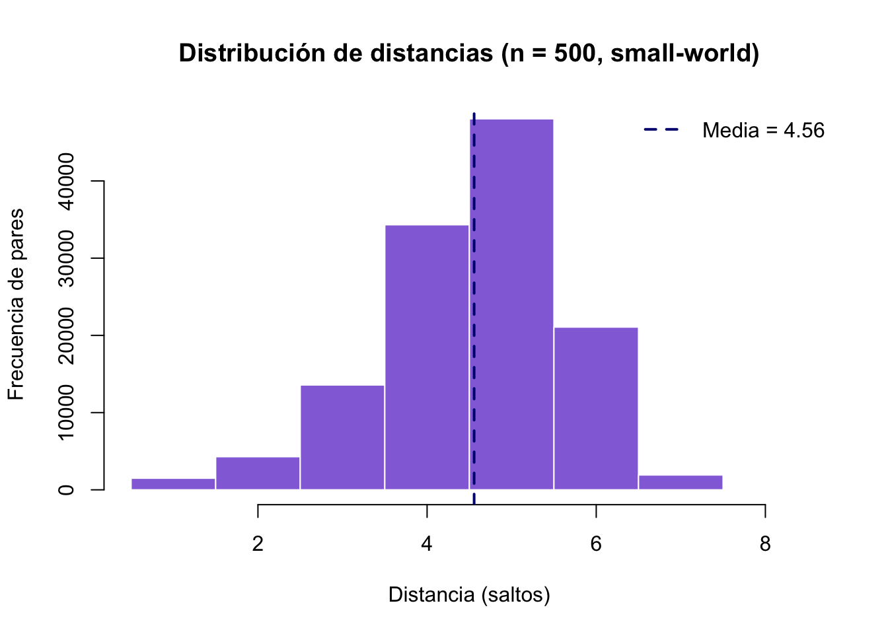
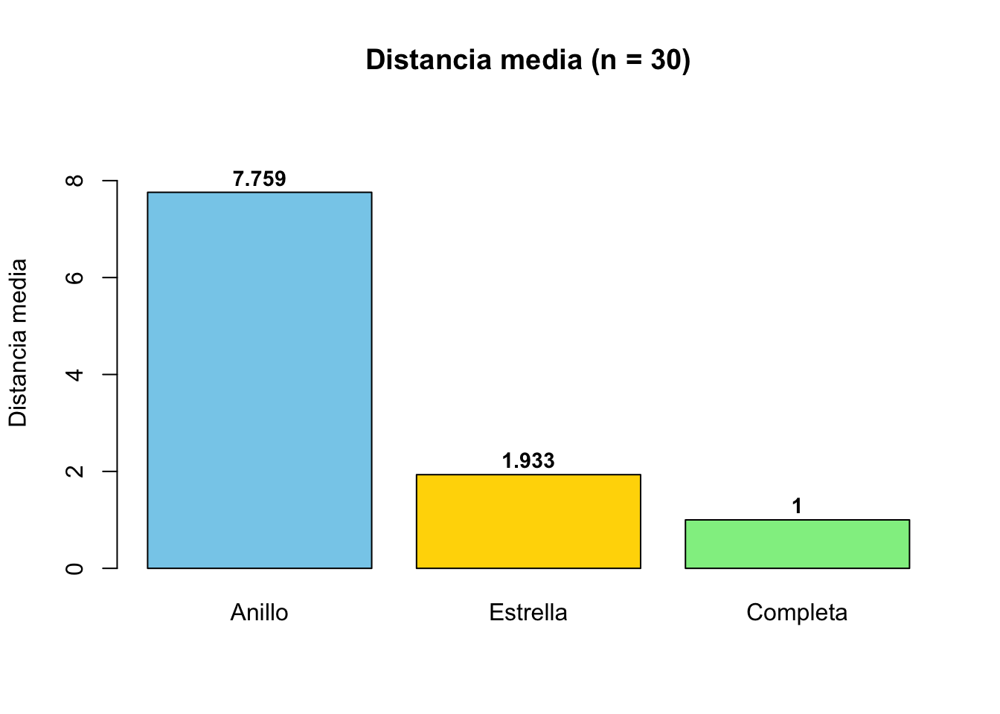

flowchart TD
A[Distancias en redes] --> B[Caminos más cortos]
A --> C[Matriz de distancias]
A --> D[Métricas globales]
A --> E[Eficiencia]
B --> B1["shortest_paths()"]
B --> B2[Diámetro]
C --> C1[Heatmap]
D --> D1[Distancia media]
D --> D2[Excentricidad]
D --> D3[Centro y periferia]
E --> E1[Eficiencia global]
E --> E2[Densidad de aristas]
Distancias y eficiencia
🎯 Objetivos de aprendizaje
Al finalizar este capítulo serás capaz de:
- Calcular la distancia más corta (shortest path) entre cualquier par de nodos.
- Construir e interpretar la matriz de distancias y su representación como mapa de calor.
- Medir la distancia media, el diámetro y la excentricidad de una red.
- Evaluar la eficiencia global de una red y su densidad de aristas.
- Comparar distintas topologías en función de sus propiedades de distancia.
Pregunta motivadora: En una red social, ¿cuántos “apretones de manos” separan a dos personas cualesquiera? La famosa idea de los “seis grados de separación” sugiere que el número es sorprendentemente bajo. ¿Es cierto para cualquier tipo de red?
Preparación del entorno
library(igraph)
Attaching package: 'igraph'The following objects are masked from 'package:stats':
decompose, spectrumThe following object is masked from 'package:base':
union¿Qué es la distancia en una red?
En una red, la distancia entre dos nodos \(u\) y \(v\) es el número mínimo de aristas que hay que recorrer para ir de \(u\) a \(v\). Se denota \(d(u, v)\) y también se le llama geodésica o shortest path length.
\[ d(u, v) = \min \{ \text{número de aristas en un camino de } u \text{ a } v \} \]
💡 Concepto clave
La distancia en redes no es geográfica, es topológica: mide saltos entre nodos, no kilómetros. Dos personas en diferentes continentes pueden estar a distancia 1 si son amigos directos en una red social.
Comencemos con un ejemplo simple: una red tipo anillo.
g <- make_ring(10)
V(g)$name <- paste0("N", 1:10)
plot(g,
vertex.color = "skyblue",
vertex.size = 25,
main = "Red tipo anillo (10 nodos)")
Caminos más cortos
Entre dos nodos específicos
# ¿Cuál es el camino más corto entre N1 y N6?
camino <- shortest_paths(g, from = "N1", to = "N6")$vpath[[1]]
cat("Camino más corto de N1 a N6:", paste(V(g)$name[camino], collapse = " → "), "\n")Camino más corto de N1 a N6: N1 → N2 → N3 → N4 → N5 → N6 cat("Distancia:", length(camino) - 1, "saltos\n")Distancia: 5 saltos# Colorear el camino
V(g)$color <- "skyblue"
V(g)$color[camino] <- "tomato"
# Identificar las aristas del camino
camino_ids <- as.integer(camino)
pares <- c()
for (i in 1:(length(camino_ids) - 1)) {
pares <- c(pares, camino_ids[i], camino_ids[i + 1])
}
eids <- get.edge.ids(g, pares)Warning: `get.edge.ids()` was deprecated in igraph 2.1.0.
ℹ Please use `get_edge_ids()` instead.E(g)$color <- "gray70"
E(g)$width <- 1
E(g)$color[eids] <- "red"
E(g)$width[eids] <- 3
plot(g, vertex.size = 25, main = "Camino más corto: N1 → N6")
# Restaurar colores
V(g)$color <- "skyblue"
E(g)$color <- "gray70"
E(g)$width <- 1
La matriz de distancias completa
La matriz de distancias contiene \(d(i, j)\) para todos los pares de nodos. Es una herramienta fundamental para entender la estructura global de la red.
dist_mat <- distances(g)
knitr::kable(dist_mat,
caption = "Matriz de distancias de la red anillo (10 nodos)")| N1 | N2 | N3 | N4 | N5 | N6 | N7 | N8 | N9 | N10 | |
|---|---|---|---|---|---|---|---|---|---|---|
| N1 | 0 | 1 | 2 | 3 | 4 | 5 | 4 | 3 | 2 | 1 |
| N2 | 1 | 0 | 1 | 2 | 3 | 4 | 5 | 4 | 3 | 2 |
| N3 | 2 | 1 | 0 | 1 | 2 | 3 | 4 | 5 | 4 | 3 |
| N4 | 3 | 2 | 1 | 0 | 1 | 2 | 3 | 4 | 5 | 4 |
| N5 | 4 | 3 | 2 | 1 | 0 | 1 | 2 | 3 | 4 | 5 |
| N6 | 5 | 4 | 3 | 2 | 1 | 0 | 1 | 2 | 3 | 4 |
| N7 | 4 | 5 | 4 | 3 | 2 | 1 | 0 | 1 | 2 | 3 |
| N8 | 3 | 4 | 5 | 4 | 3 | 2 | 1 | 0 | 1 | 2 |
| N9 | 2 | 3 | 4 | 5 | 4 | 3 | 2 | 1 | 0 | 1 |
| N10 | 1 | 2 | 3 | 4 | 5 | 4 | 3 | 2 | 1 | 0 |
⚠️ Error frecuente
Si la red tiene componentes desconectados, la distancia entre nodos de diferentes componentes es Inf (infinito). Siempre verifica con is_connected(g) antes de interpretar la matriz de distancias.
heatmap(dist_mat,
Rowv = NA, Colv = NA,
col = hcl.colors(20, palette = "YlOrRd", rev = TRUE),
scale = "none",
main = "Mapa de calor — Distancias en red anillo")
Observa el patrón de bandas diagonales: en una red anillo, la distancia crece simétricamente desde la diagonal (distancia 0) hasta un máximo en la posición diametralmente opuesta.
Métricas globales de distancia
Distancia media
La distancia media \(\langle d \rangle\) es el promedio de las distancias más cortas entre todos los pares de nodos. Indica qué tan “compacta” es la red.
\[ \langle d \rangle = \frac{1}{n(n-1)} \sum_{i \neq j} d(i, j) \]
cat("Distancia media de la red anillo:", mean_distance(g), "\n")Distancia media de la red anillo: 2.777778 Diámetro
El diámetro es la distancia más larga entre cualquier par de nodos conectados. Representa el “peor caso” de comunicación en la red.
\[ \text{diámetro} = \max_{i,j} \, d(i, j) \]
cat("Diámetro de la red anillo:", diameter(g), "\n")Diámetro de la red anillo: 5 # El camino que corresponde al diámetro
camino_largo <- get_diameter(g)
cat("Camino más largo:", paste(V(g)$name[camino_largo], collapse = " → "), "\n")Camino más largo: N1 → N2 → N3 → N4 → N5 → N6 Excentricidad
La excentricidad de un nodo \(v\) es la distancia máxima de \(v\) a cualquier otro nodo. Nos dice qué tan “periférico” es un nodo.
\[ \text{ecc}(v) = \max_{u} \, d(v, u) \]
A partir de la excentricidad se definen dos conceptos importantes:
- Centro de la red: nodo(s) con la menor excentricidad.
- Periferia: nodo(s) con la mayor excentricidad (igual al diámetro).
ecc <- eccentricity(g)
# Tabla de excentricidad por nodo
knitr::kable(
data.frame(Nodo = V(g)$name, Excentricidad = ecc),
caption = "Excentricidad de cada nodo en la red anillo"
)| Nodo | Excentricidad | |
|---|---|---|
| N1 | N1 | 5 |
| N2 | N2 | 5 |
| N3 | N3 | 5 |
| N4 | N4 | 5 |
| N5 | N5 | 5 |
| N6 | N6 | 5 |
| N7 | N7 | 5 |
| N8 | N8 | 5 |
| N9 | N9 | 5 |
| N10 | N10 | 5 |
hist(ecc,
col = "mediumpurple", border = "white",
main = "Distribución de excentricidad",
xlab = "Excentricidad", ylab = "Frecuencia",
breaks = seq(min(ecc) - 0.5, max(ecc) + 0.5, by = 1))
💡 Concepto clave
En una red anillo con \(n\) nodos, todos los nodos tienen la misma excentricidad (\(\lfloor n/2 \rfloor\)) porque la red es perfectamente simétrica. Esto no es así en redes más complejas.
Eficiencia de la red
La eficiencia global mide qué tan bien se puede transmitir información en la red. Se calcula como el promedio del inverso de las distancias:
\[ E_{\text{global}} = \frac{1}{n(n-1)} \sum_{i \neq j} \frac{1}{d(i, j)} \]
Una red completamente conectada tiene eficiencia 1; una red sin aristas tiene eficiencia 0.
# Función para calcular eficiencia global
eficiencia_global <- function(g) {
d <- distances(g)
n <- vcount(g)
# Reemplazar Inf por 0 (nodos desconectados no contribuyen)
inv_d <- ifelse(d == 0 | is.infinite(d), 0, 1 / d)
sum(inv_d) / (n * (n - 1))
}
cat("Eficiencia global (anillo):", round(eficiencia_global(g), 4), "\n")Eficiencia global (anillo): 0.4852 Densidad de aristas
La densidad indica qué fracción de todas las aristas posibles existen realmente:
\[ \rho = \frac{2m}{n(n-1)} \quad \text{(red no dirigida)} \]
donde \(m\) es el número de aristas y \(n\) el de nodos.
cat("Densidad de aristas (anillo):", round(edge_density(g), 4), "\n")Densidad de aristas (anillo): 0.2222 cat("Aristas existentes:", ecount(g), "\n")Aristas existentes: 10 cat("Aristas posibles:", choose(vcount(g), 2), "\n")Aristas posibles: 45 El efecto de los atajos
¿Qué pasa si agregamos una sola arista “atajo” entre dos nodos distantes de una red anillo? Veamos cómo impacta las métricas.
g_original <- make_ring(20)
V(g_original)$name <- paste0("N", 1:20)
# Agregar un atajo entre N1 y N11 (diametralmente opuestos)
g_atajo <- add_edges(g_original, c(1, 11))
# Métricas antes y después
metricas <- data.frame(
Métrica = c("Distancia media", "Diámetro", "Eficiencia global"),
Sin_atajo = c(
round(mean_distance(g_original), 3),
diameter(g_original),
round(eficiencia_global(g_original), 4)
),
Con_atajo = c(
round(mean_distance(g_atajo), 3),
diameter(g_atajo),
round(eficiencia_global(g_atajo), 4)
)
)
knitr::kable(metricas,
caption = "Efecto de un solo atajo en una red anillo de 20 nodos",
col.names = c("Métrica", "Sin atajo", "Con atajo"))| Métrica | Sin atajo | Con atajo |
|---|---|---|
| Distancia media | 5.263 | 4.2680 |
| Diámetro | 10.000 | 10.0000 |
| Eficiencia global | 0.303 | 0.3397 |
par(mfrow = c(1, 2), mar = c(1, 1, 3, 1))
# Layout fijo para ambos gráficos
lay <- layout_in_circle(g_original)
plot(g_original, layout = lay,
vertex.color = "skyblue", vertex.size = 15,
vertex.label.cex = 0.6,
main = "Anillo original")
# Destacar el atajo en la segunda red
E(g_atajo)$color <- c(rep("gray70", ecount(g_original)), "red")
E(g_atajo)$width <- c(rep(1, ecount(g_original)), 3)
plot(g_atajo, layout = lay,
vertex.color = "skyblue", vertex.size = 15,
vertex.label.cex = 0.6,
main = "Anillo + 1 atajo (N1–N11)")
🔑 Recuerda
Un solo atajo puede reducir drásticamente la distancia media de una red. Este fenómeno es la base del modelo small-world de Watts y Strogatz [@watts1998]: unas pocas conexiones aleatorias transforman una red regular en una donde “todo el mundo está cerca de todo el mundo”.
Comparación entre topologías
Comparemos las métricas de distancia de cinco topologías clásicas con 50 nodos:
set.seed(42)
redes <- list(
Anillo = make_ring(50),
Estrella = make_star(50, mode = "undirected"),
Completa = make_full_graph(50),
"Small-world" = sample_smallworld(1, 50, nei = 3, p = 0.1),
"Barabási–Albert" = sample_pa(50, directed = FALSE)
)
# Calcular métricas
comparacion <- data.frame(
Red = names(redes),
Nodos = sapply(redes, vcount),
Aristas = sapply(redes, ecount),
Dist_media = round(sapply(redes, mean_distance), 3),
Diámetro = sapply(redes, diameter),
Densidad = round(sapply(redes, edge_density), 4),
Eficiencia = round(sapply(redes, eficiencia_global), 4)
)
knitr::kable(comparacion,
caption = "Comparación de métricas de distancia entre cinco topologías (50 nodos)",
col.names = c("Red", "Nodos", "Aristas", "Dist. media",
"Diámetro", "Densidad", "Eficiencia"))| Red | Nodos | Aristas | Dist. media | Diámetro | Densidad | Eficiencia | |
|---|---|---|---|---|---|---|---|
| Anillo | Anillo | 50 | 50 | 12.755 | 25 | 0.0408 | 0.1549 |
| Estrella | Estrella | 50 | 49 | 1.960 | 2 | 0.0400 | 0.5200 |
| Completa | Completa | 50 | 1225 | 1.000 | 1 | 1.0000 | 1.0000 |
| Small-world | Small-world | 50 | 150 | 2.673 | 5 | 0.1224 | 0.4462 |
| Barabási–Albert | Barabási–Albert | 50 | 49 | 4.358 | 9 | 0.0400 | 0.2851 |
par(mfrow = c(1, 2), mar = c(8, 4, 3, 1))
# Distancia media
barplot(comparacion$Dist_media,
names.arg = comparacion$Red,
col = c("skyblue", "gold", "lightgreen", "mediumpurple", "tomato"),
main = "Distancia media",
ylab = "Distancia media",
las = 2, cex.names = 0.8)
# Eficiencia
barplot(comparacion$Eficiencia,
names.arg = comparacion$Red,
col = c("skyblue", "gold", "lightgreen", "mediumpurple", "tomato"),
main = "Eficiencia global",
ylab = "Eficiencia",
las = 2, cex.names = 0.8)
💡 Concepto clave
La red completa tiene la eficiencia máxima (todos están a distancia 1), pero requiere \(\binom{n}{2}\) aristas. La red small-world logra una eficiencia alta con muchas menos aristas, lo que la convierte en un diseño “económico” para la propagación rápida de información.
Distancias en redes grandes
Veamos cómo se comportan las distancias en una red small-world de 500 nodos, similar a las que aparecen en sistemas reales.
set.seed(42)
g_large <- sample_smallworld(1, 500, nei = 3, p = 0.1)
cat("Nodos:", vcount(g_large), "\n")Nodos: 500 cat("Aristas:", ecount(g_large), "\n")Aristas: 1500 cat("Distancia media:", round(mean_distance(g_large), 3), "\n")Distancia media: 4.556 cat("Diámetro:", diameter(g_large), "\n")Diámetro: 8 # Mostrar solo un fragmento (la matriz completa sería 500×500)
dist_large <- distances(g_large)
heatmap(dist_large[1:20, 1:20],
Rowv = NA, Colv = NA,
col = hcl.colors(20, palette = "YlOrRd", rev = TRUE),
scale = "none",
main = "Distancias (primeros 20 nodos)")
# Extraer todas las distancias (triángulo superior para no duplicar)
todas_dist <- dist_large[upper.tri(dist_large)]
hist(todas_dist,
col = "mediumpurple", border = "white",
main = "Distribución de distancias (n = 500, small-world)",
xlab = "Distancia (saltos)", ylab = "Frecuencia de pares",
breaks = seq(0.5, max(todas_dist) + 0.5, by = 1))
abline(v = mean(todas_dist), col = "navy", lwd = 2, lty = 2)
legend("topright", paste("Media =", round(mean(todas_dist), 2)),
col = "navy", lty = 2, lwd = 2, bty = "n")
⚠️ Error frecuente
No intentes visualizar la matriz de distancias completa de una red grande con heatmap(). Para \(n = 1000\), la matriz tiene un millón de entradas y el gráfico será ilegible. Muestra fragmentos o usa la distribución de distancias como alternativa.
Ejercicios
Ejercicios resueltos
Ejercicio resuelto 1: Compara la distancia media de tres redes: anillo, estrella y grafo completo, todos con 30 nodos. ¿Cuál sería la mejor para difundir una noticia rápidamente? Visualiza los resultados con un gráfico de barras.
📝 Solución
Paso 1: Crear las tres redes y calcular sus métricas.
redes_30 <- list(
Anillo = make_ring(30),
Estrella = make_star(30, mode = "undirected"),
Completa = make_full_graph(30)
)
metricas_30 <- data.frame(
Red = names(redes_30),
Dist_media = round(sapply(redes_30, mean_distance), 3),
Diámetro = sapply(redes_30, diameter),
Aristas = sapply(redes_30, ecount)
)
knitr::kable(metricas_30,
caption = "Métricas de tres topologías con 30 nodos",
col.names = c("Red", "Dist. media", "Diámetro", "Aristas"))| Red | Dist. media | Diámetro | Aristas | |
|---|---|---|---|---|
| Anillo | Anillo | 7.759 | 15 | 30 |
| Estrella | Estrella | 1.933 | 2 | 29 |
| Completa | Completa | 1.000 | 1 | 435 |
Paso 2: Visualizar con gráfico de barras.
barplot(metricas_30$Dist_media,
names.arg = metricas_30$Red,
col = c("skyblue", "gold", "lightgreen"),
main = "Distancia media (n = 30)",
ylab = "Distancia media",
ylim = c(0, max(metricas_30$Dist_media) * 1.2))
text(x = c(0.7, 1.9, 3.1), y = metricas_30$Dist_media + 0.3,
labels = metricas_30$Dist_media, cex = 0.9, font = 2)
Interpretación: La red completa tiene distancia media 1 (todos conectados directamente), pero requiere \(\binom{30}{2} = 435\) aristas. La estrella logra una distancia media de apenas ~2 con solo 29 aristas (muy eficiente). El anillo tiene la mayor distancia media (~8) porque la información debe recorrer la mitad del círculo. Para difundir una noticia rápido, la completa es óptima pero costosa; la estrella es la más eficiente en aristas por unidad de distancia.
Ejercicio resuelto 2: Crea una función resumen_distancias() que reciba un grafo y devuelva un data frame con: distancia media, diámetro, excentricidad mínima (radio), excentricidad máxima y eficiencia global. Pruébala con una red small-world de 100 nodos.
📝 Solución
Paso 1: Definir la función.
resumen_distancias <- function(g) {
ecc <- eccentricity(g)
d <- distances(g)
n <- vcount(g)
# Eficiencia global
inv_d <- ifelse(d == 0 | is.infinite(d), 0, 1 / d)
eficiencia <- sum(inv_d) / (n * (n - 1))
data.frame(
Métrica = c("Distancia media", "Diámetro", "Radio (ecc. mín.)",
"Ecc. máxima", "Eficiencia global", "¿Conexa?"),
Valor = c(
round(mean_distance(g), 3),
diameter(g),
min(ecc),
max(ecc),
round(eficiencia, 4),
is_connected(g)
)
)
}Paso 2: Probar con una red small-world.
set.seed(55)
g_sw100 <- sample_smallworld(1, 100, nei = 3, p = 0.1)
knitr::kable(resumen_distancias(g_sw100),
caption = "Resumen de distancias — Red small-world (100 nodos)")| Métrica | Valor |
|---|---|
| Distancia media | 3.2510 |
| Diámetro | 6.0000 |
| Radio (ecc. mín.) | 4.0000 |
| Ecc. máxima | 6.0000 |
| Eficiencia global | 0.3589 |
| ¿Conexa? | 1.0000 |
Interpretación: La función encapsula todas las métricas de distancia en una sola llamada. El radio indica la excentricidad del nodo más “central” y la eficiencia global resume qué tan fácil es la comunicación en la red en un solo número entre 0 y 1.
Ejercicios con pistas
Ejercicio 1: Crea una red tipo anillo de 20 nodos. Agrega una arista entre dos nodos distantes (por ejemplo, N1 y N11). ¿Cuánto se reduce la distancia media? ¿Y el diámetro? Repite agregando 2, 3 y 5 atajos en posiciones diferentes y grafica la evolución de la distancia media.
💡 Pista 1
Guarda la distancia media original con mean_distance(g) antes de modificar. Usa add_edges() para agregar atajos en cada iteración.
💡 Pista 2
Para los atajos adicionales, elige pares de nodos alejados: (N5, N15), (N3, N18), etc. Almacena los resultados en un vector y grafícalos con plot(0:5, distancias, type = "b").
💡 Pista 3 — Pseudocódigo
1. g <- make_ring(20)
2. atajos <- list(c(1,11), c(5,15), c(3,18), c(8,14), c(2,19))
3. resultados <- mean_distance(g) # sin atajos
4. for (i in 1:5) {
5. g <- add_edges(g, atajos[[i]])
6. resultados <- c(resultados, mean_distance(g))
7. }
8. plot(0:5, resultados, type = "b",
9. xlab = "Número de atajos", ylab = "Distancia media")Ejercicio 2: Calcula la excentricidad de cada nodo en una red tipo estrella de 15 nodos. Identifica el centro y la periferia de la red. ¿Por qué la estrella tiene un centro tan obvio?
💡 Pista 1
Usa eccentricity(g) y luego which.min() para encontrar el centro. En una estrella, el nodo central tiene excentricidad 1.
💡 Pista 2
Los nodos periféricos tienen excentricidad 2 (necesitan pasar por el centro para llegar a cualquier otro nodo periférico). El centro es el nodo 1 (el hub).
💡 Pista 3 — Pseudocódigo
1. g <- make_star(15, mode = "undirected")
2. ecc <- eccentricity(g)
3. cat("Centro:", which(ecc == min(ecc)))
4. cat("Periferia:", which(ecc == max(ecc)))
5. # Colorear: centro rojo, periferia azul
6. V(g)$color <- ifelse(ecc == min(ecc), "tomato", "skyblue")
7. plot(g, vertex.size = 20)Ejercicio 3: Crea una red aleatoria ER (sample_gnp(100, 0.03)) y una red regular (anillo) del mismo tamaño. Compara sus distribuciones de distancias par-a-par usando histogramas superpuestos. ¿Cuál tiene distancias más “compactas”?
💡 Pista 1
Extrae las distancias del triángulo superior de la matriz: d[upper.tri(d)]. Esto evita contar cada par dos veces.
💡 Pista 2
Asegúrate de que la red ER sea conexa (is_connected()). Si no lo es, regenera con una semilla diferente o usa p = 0.05.
💡 Pista 3 — Pseudocódigo
1. set.seed(10)
2. g_er <- sample_gnp(100, 0.05)
3. g_ring <- make_ring(100)
4. d_er <- distances(g_er)[upper.tri(distances(g_er))]
5. d_ring <- distances(g_ring)[upper.tri(distances(g_ring))]
6. hist(d_ring, col = adjustcolor("skyblue", 0.5), ...)
7. hist(d_er, col = adjustcolor("tomato", 0.5), add = TRUE)
8. legend(...)La red ER debería tener distancias más compactas (concentradas en valores bajos) gracias a sus conexiones aleatorias.
Ejercicios propuestos
Ejercicio propuesto 1 ⭐
Usa shortest_paths() para encontrar el camino más corto entre los nodos 1 y 50 en una red BA de 100 nodos. ¿Cuántos saltos son? Visualiza la red destacando el camino encontrado.
Autoevaluación: En una red BA de 100 nodos, el camino más corto entre nodos arbitrarios suele tener entre 2 y 5 saltos gracias a los hubs.
Ejercicio propuesto 2 ⭐⭐
Crea una función eficiencia_global() y úsala para comparar la eficiencia de redes sample_smallworld(1, 100, nei = 3, p) variando \(p \in \{0, 0.01, 0.05, 0.1, 0.3, 0.5, 1\}\). Grafica eficiencia vs. \(p\). ¿En qué rango de \(p\) se obtiene el mayor “salto” de eficiencia?
Autoevaluación: La eficiencia debería aumentar rápidamente entre \(p = 0.01\) y \(p = 0.1\), y luego estabilizarse. Esto refleja la transición al régimen small-world.
Ejercicio propuesto 3 ⭐⭐
Calcula la distancia media y el diámetro de una red BA de 1000 nodos. Encuentra los dos nodos más alejados entre sí (los extremos del diámetro) y extrae el camino completo entre ellos con get_diameter(). ¿Pasa el camino por algún hub?
Autoevaluación: En una red BA de 1000 nodos, el diámetro suele estar entre 6 y 10. El camino del diámetro generalmente pasa por al menos un hub (nodo con grado alto).
Ejercicio propuesto 4 ⭐⭐⭐
Diseña un experimento: genera 30 redes small-world con \(n = 200\) y \(p\) fijo en 0.05, cada una con diferente semilla. Para cada red, calcula la distancia media y el diámetro. Grafica un boxplot de ambas métricas. ¿Cuánta variabilidad hay entre realizaciones del mismo modelo?
Autoevaluación: Las distancias medias deberían ser muy similares (baja varianza), mientras que el diámetro puede mostrar más variabilidad porque depende de los “extremos” de la red.
Ejercicio propuesto 5 ⭐⭐⭐
Investiga la relación entre densidad y eficiencia: genera redes ER con 100 nodos y \(p\) variando de 0.01 a 0.50 (en pasos de 0.01). Para cada una, calcula la densidad y la eficiencia global. Grafica eficiencia vs. densidad. ¿La relación es lineal?
Autoevaluación: La relación debería ser creciente pero no lineal: la eficiencia crece rápido al principio (las primeras aristas tienen un impacto enorme) y luego se satura al acercarse a 1. Un gráfico con forma de curva logarítmica o raíz cuadrada es esperable.
Resumen del capítulo
flowchart LR
A[Distancias] --> B[Caminos más cortos]
B --> C[Matriz de distancias]
C --> D[Dist. media y diámetro]
D --> E[Excentricidad: centro/periferia]
E --> F[Eficiencia global]
F --> G["Siguiente: Clustering →"]
style G fill:#e8f4f8,stroke:#3ABEF9
| Función / Concepto | Descripción |
|---|---|
distances(g) |
Matriz de distancias más cortas entre todos los pares |
shortest_paths(g, from, to) |
Camino más corto entre dos nodos específicos |
mean_distance(g) |
Distancia media de la red |
diameter(g) / get_diameter(g) |
Diámetro y camino correspondiente |
eccentricity(g) |
Excentricidad de cada nodo |
edge_density(g) |
Densidad de aristas |
| Eficiencia global | \(\frac{1}{n(n-1)} \sum_{i \neq j} 1/d(i,j)\) |
| Centro / Periferia | Nodos con menor / mayor excentricidad |
Conexión con el siguiente capítulo: Las distancias nos dicen qué tan lejos están los nodos, pero no nos cuentan toda la historia. En el ?@sec-clustering exploraremos si los vecinos de un nodo tienden a ser vecinos entre sí — un fenómeno clave llamado clustering que distingue las redes reales de las puramente aleatorias.
Autoevaluación
Pregunta 1
¿Qué representa el diámetro de una red?
- El número total de aristas
- La distancia media entre todos los pares
- La distancia más larga entre cualquier par de nodos ✅
- El grado del nodo más conectado
El diámetro es el “peor caso”: la distancia máxima entre dos nodos en la red.
Pregunta 2
Verdadero o Falso: Si una red tiene componentes desconectados, mean_distance() devuelve Inf.
❌ Falso (por defecto). En igraph, mean_distance() ignora las distancias infinitas y calcula el promedio solo sobre pares de nodos conectados. Sin embargo, puedes pasar unconnected = TRUE para incluir los Inf.
Pregunta 3
¿Cuál de estas redes tiene la menor distancia media para un mismo número de nodos \(n\)?
- Anillo
- Lattice 2D
- Grafo completo ✅
- Árbol binario
En el grafo completo todos los nodos están a distancia 1 entre sí, por lo que la distancia media es exactamente 1.
Pregunta 4
¿Qué es la excentricidad de un nodo \(v\)?
Es la distancia máxima de \(v\) a cualquier otro nodo de la red: \(\text{ecc}(v) = \max_u d(v, u)\). Cuanto menor la excentricidad, más “central” es el nodo.
Pregunta 5
Verdadero o Falso: Agregar un solo atajo a una red anillo de 1000 nodos puede reducir su distancia media significativamente.
✅ Verdadero. Este es precisamente el efecto small-world: unos pocos atajos reducen drásticamente las distancias en redes regulares [@watts1998].